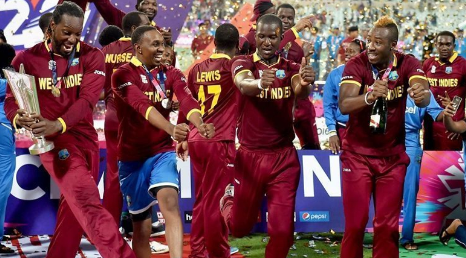

WEST INDIES CRICKET TEAM
The West Indies cricket team is a multi-national men's cricket team representing the Anglophone Caribbean region and administered by Cricket West Indies. The players on this composite team are selected from a chain of fifteen Caribbean territories, which are parts of several different countries and dependencies. As of 24 June 2018, the West Indies cricket team is ranked ninth in the world in Tests, ninth in One-Day Internationals (ODIs) and seventh in Twenty20 Internationals (T20Is) in the official International Cricket Council (ICC) rankings.[8]
The West Indies have won the ICC Cricket World Cup twice (1975 and 1979), the ICC World Twenty20 twice (2012 and 2016), the ICC Champions Trophy once (2004), the ICC Under 19 Cricket World Cup once (2016), and have also finished as runners-up in the Cricket World Cup (1983), the Under 19 Cricket World Cup (2004), and the ICC Champions Trophy (2006). The West Indies appeared in three consecutive World Cup finals (1975, 1979 and 1983), and were the first team to win back-to-back World Cups (1975 and 1979).